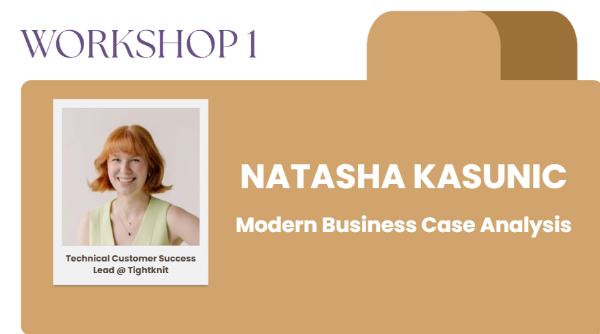

Designing the learning experience for a 150+ student hackathon
One real-world case, two expert-led workshops, and a judging framework — built so first-timers could ship real work and judges could score it fairly.
The setup
[case]Hacks is a hackathon built for a deliberately mixed crowd — 150+ students ranging from total beginners to experienced builders. The hard part isn't running the event; it's making sure a first-timer and a seasoned competitor can both walk away having learned something and shipped something they're proud of. As VP of Education, I owned the part of the experience that makes that possible: what participants learn, what they build, and how their work gets judged.
Read the case package (PDF)My role
Designed and delivered the end-to-end learning experience — from the case participants tackled, to the workshops that got them ready, to the criteria judges used to evaluate them.
The problem
A wide skill range and a short timeline. Beginners needed enough scaffolding to start; advanced teams needed enough room to stretch. And every team needed to be judged consistently and fairly.
Four things I built
One core case
Authored the central case challenge with a clear prompt, constraints, and deliverables — scoped so beginners could complete it and stronger teams could push it further.
Two expert-led workshops
Curated and ran two beginner-ready workshops — product thinking and AI prototyping — that took participants from zero to a working approach.
Alumni panel
Hosted an alumni panel — bringing back past competitors to share how they approached the event, what they'd do differently, and answer questions live.
Judging framework
Established judging criteria and an evaluation framework so final submissions were scored consistently, transparently, and fairly across all teams.
Two sessions, two experts
I lined up two industry speakers and built each session to meet beginners where they were — one on framing the problem, one on building fast.

Modern Business Case Analysis
Natasha Kasunic · Technical Customer Success Lead @ Tightknit (prev. Head of Product)
A "Product Thinking 101" session on how to fall in love with the problem before you build the solution. Natasha gave participants a repeatable way to frame and pressure-test a case — the foundation they needed before writing a single line of their pitch.


AI Tools for Rapid Prototyping
Syed Ahmed · Founding Engineer @ Zero to Agent
A hands-on walkthrough of going from idea to working prototype fast using modern AI tooling. Syed showed teams how to build and iterate quickly — so even first-timers could ship something real inside the event's timeline.

How it came together
Scope the audience
Mapped the skill spread and designed the case so first-timers and advanced teams could both find a level.
Author the case
Wrote the prompt, constraints, and deliverables — with enough structure for beginners to get started.
Build the runway
Worked with two industry speakers and shaped beginner-ready workshops to fill the biggest knowledge gaps.
Define fair judging
Created the rubric and evaluation framework, then briefed judges to keep scoring consistent.
The rubric
The evaluation framework I built — weighted so effort and clarity counted alongside raw technical skill, which kept it fair for beginners.
Moments from the event


What happened & what I took away
The education track gave 150+ students a clear path from "I'm not sure where to start" to a finished, judged submission — and gave judges a framework they could apply consistently. The biggest lesson: good scaffolding is a design problem. When you scope the case, the workshops, and the rubric as one connected system, beginners and advanced builders can share the same event and both feel it was built for them.